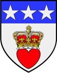

Se notering!. Blev ca 36 år.
omkring 1297 Douglasdale, Lanarkshire, Scotland. [1]
1333-07-19 Beerwick-Upon- Tweed, Northumberland, England. [1]
Archibald ingick i en grupp som styrde Scotland, när ingen Kung var tillsatt. Dessa hade titeln Regent.